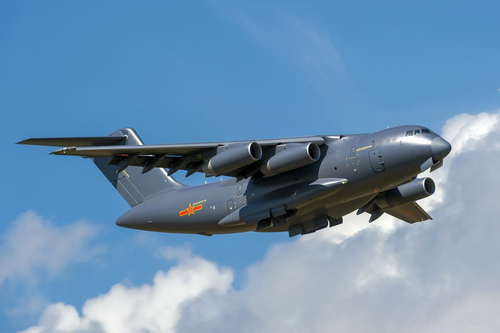
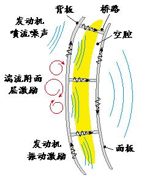
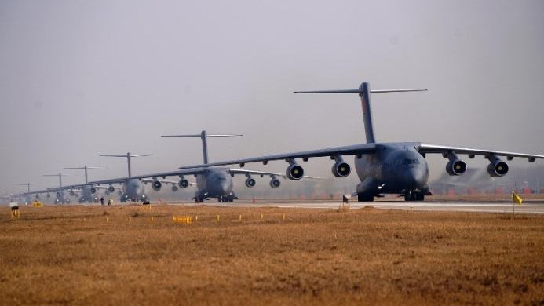

在现代军事领域，大型运输机的舱室噪声控制水平直接关系到部队远程投送能力和作战效能。长期以来，我国在这一关键技术领域受制于人，面临着基础薄弱、技术封锁等多重挑战。大运飞机（运-20飞机）的成功研制，不仅填补了我国百吨级大型军用运输机的空白，更在低噪声舱室设计领域实现了从“跟跑”到“并跑”的历史性跨越。
（一）核心技术突破
大运飞机研发团队直面三大技术难题：首先，针对传统飞机壁板隔声性能不足的问题，创新性地采用声学超材料技术，研制出具有国际领先水平的高隔声量飞机壁板，隔声性能提升85%以上。其次，攻克了复杂声环境下的噪声源识别技术瓶颈，通过多源数据融合处理技术，实现了对大型飞机舱室多种噪声源的精准识别和分类，为精准降噪提供了科学依据。第三，建立了覆盖20Hz-20kHz全频段的噪声分析体系，采用有限元、边界元和统计能量分析相结合的方法，实现了舱室噪声的精确预测和控制。
（二）创新成果亮点
设计体系创新：构建了完整的大型飞机舱室低噪声控制设计体系，包括噪声源识别、传播路径分析和接收点优化三大模块。其中，翼吊发动机短舱消声声衬设计方法属国内首创，解决了发动机噪声这一最大噪声源的降噪难题。
材料应用突破：研发的声学超材料具有轻量化（减重53%）、高隔声（计权隔声量达39dB）和多功能集成（隔声、隔热、美观）三大特点，已获得多项国家发明专利。
测试技术领先：构建了完整的材料级-壁板级-舱段级-飞机级的降噪方案效果验证体系，为动态优化降噪方案提供了技术支撑。
（三）应用成效显著
经实际飞行验证，大运飞机舱室噪声控制指标全面优于设计标准：重要工作区域噪声不超过85dBA，普通区域不超过90dBA，是目前国内最安静的军用飞机。这意味着：乘员的日暴露容许时间从0.5h提升至6.7h，极大提升了飞机的出勤率及长航时飞行舒适性。
（四）综合效益分析
技术积累方面：形成18项发明专利、8项实用新型专利、16项软件著作权、4篇论文，构建了完整的大型飞机低噪声设计知识产权体系。
标准建设方面：主持制定的《飞机发动机短舱声衬消声设计要求》《飞机和直升机噪声控制要求》《舰载飞机噪声控制与测量要求》标准成为行业标杆规范。
人才培养方面：培养了一支涵盖声学、材料、结构等多学科交叉的创新团队，获得省部级科技奖励4项，培养了4名声学专业博士，1人获得国家级人才荣誉称号。
我国大运飞机低噪声技术取得重大突破，标志着大型军用运输机设计水平跻身世界前列。通过降噪设计达到了大运飞机的客户需求，实现了噪声水平从100dBA降至85dBA的跨越。单架机降噪目标重量减小1000千克，正所谓“飞机1克重量1克金”，大大减小了飞机成本，提升了飞机性能，彰显了中国航空人的创新能力。这一自主创新成果打破了国外技术垄断，实现了飞机的装机应用和新一代军用运输机的批量交付，将产生近千亿的经济效益。
大运飞机（运-20飞机）具有当代先进水平和完全自主知识产权，其中低噪声舱室设计是提升乘员舒适性、保持人员工效性和保证飞机使用性能的重要标志之一。国内军机舱室噪声控制起步晚、基础薄弱，并且受制于发动机噪声、气动噪声和机载设备噪声等影响，飞机舱室噪声大，国内中型运输机舱室噪声水平大致为100dBA,而国外同类大型运输机舱室噪声水平为86-100dBA。为实现大运飞机舱室低噪声设计，本项目建立了飞机舱室噪声控制设计体系，发明了基于声学超材料的高隔声量飞机壁板和国内首次自主研制的发动机消声短舱，突破了噪声源识别与定位技术瓶颈，开发了舱室全频段噪声分析与控制技术，实现了噪声水平从100dBA降至85dBA的跨越，与国内外军用飞机相比，舱内噪声控制水平国际领先。
表1国内外军用运输机舱内噪声水平
机型
飞机舱内噪声水平（单位：dBA）
国家
伊尔76
90-100
俄罗斯
C-5
86-94
美国
运-8
99
中国
运-20
85-90
中国
图1大运飞机“大象漫步”
图2大运飞机舱室内部
创新点一：首创了复杂声环境下大型飞机舱室低噪声控制手段（该创新点授权授权国家发明专利8件，实用新型专利4件，软件著作权6件，主持制定行业标准1个，出版专著1部，发表论文3篇）
针对国内飞机舱室噪声控制手段单一、缺乏噪声控制设计体系等问题，项目团队构建了完整的大型飞机舱室低噪声控制设计体系，包括噪声源降噪、噪声传播路径的隔声能力增强、减振优化设计。首先，针对传统飞机壁板隔声性能有限的问题，创新性地采用声学超材料技术，研制出具有国际领先水平的高隔声量飞机壁板，隔声性能提升85%以上。其次，基于微穿孔消声理论建立了发动机短舱消声设计技术，并首次应用于大型运输机研制，实现了发动机噪声频带内最高降噪24.4dBA，属国内首创。再次，综合运用声学测量、结构动力学分析和信号处理技术，准确评估不同位置的壁板振动对舱室噪声的影响程度，提出了大型飞机壁板高效减振设计与优化方法，并首次应用于大型运输机研制，减重优化40%。最终建立了复杂声环境下大型飞机舱室低噪声控制设计体系，可成功指导大型飞机舱室低噪声控制设计与应用。
（1）建立了复杂声环境下大型飞机舱室低噪声控制设计体系，为飞机舱室低噪声控制提供了系统的解决方案
大型飞机的主要噪声源包括发动机噪声、附面层噪声、增升装置噪声、起落架噪声以及机载系统噪声。在进行噪声控制设计时，需基于已知的噪声源特性，并结合外部与内部噪声源的特点及噪声传递路径来进行系统规划。
为确保噪声控制设计工作能够与型号研制各阶段紧密结合，在研制总要求的顶层牵引下，根据飞机设计的不同阶段，建立了飞机舱室低噪声控制设计体系。飞机舱室低噪声控制设计体系覆盖了飞机研制的整个阶段，明确了不同阶段噪声控制设计需要完成的核心工作。
（2）发明了基于声学超材料的高隔声量飞机壁板，隔声性能提升85%以上
针对传统飞机壁板隔声性能不足的问题，创新性地采用声学超材料技术，研制出具有国际领先水平的高隔声量飞机壁板，隔声性能提升85%以上。
研究表明，飞机壁板及内饰板组成的双板系统在500Hz以上频段表现出较强的中高频噪声隔离能力，但在500Hz以下低频域存在显著的“隔声塌陷区”，隔声量仅为5～10dB，表明其在阻隔低频振动能量方面存在严重不足。为满足大型飞机舱室降噪需求，研究团队建立了声学超材料的等效设计模型，并完善了与飞机壁板之间的耦合振动理论，形成了低频宽带隔声超材料结构设计方法，成功开发出一种轻薄型声学超材料结构。壁板级实验结果表明，在200～1000Hz关键频段内，隔声量显著提升，有效改善了低频“隔声塌陷区”。
图3壁板-内饰板组成的双板系统结构示意图
在国内首次将声学超材料降噪技术应用于大运飞机后，飞行噪声测试验证：舱室噪声平均降低3dBA以上。基于声学超材料的高隔声量飞机壁板，在保证优异隔声性能的同时，严格控制了附加重量和空间占用，展现出良好的工程适用性和推广价值。
（3）首创了翼吊发动机短舱消声声衬设计方法，设计频段降噪量达到24.4dBA
首先通过发动机地面开车试验，系统地获取了翼吊涡扇发动机的声源特性。测试结果表明，在未安装声衬的情况下，发动机在200Hz以上的噪声水平较高，尤其是在1000Hz以上频段，频带声压级超过110dBA。因此为有效降低飞机舱内噪声，需要进行源头降噪处理。
通过基于微穿孔板理论推导、有限元法数值仿真和地面试验，突破了发动机短舱消声声衬设计关键技术，完成了发动机声衬选型设计与试验验证，降低了发动机噪声辐射，使舱内噪声得以有效控制。通过对比消声声衬安装前后在1250Hz频率下的短舱唇口扫描面声压级分布云图，最大声压级降低约6dB。
通过将优化后的发动机短舱消声声衬安装于发动机上并进行现场噪声测试，对比分析安装前后观测点的噪声频谱。结果显示，在200Hz以上频率范围内，安装声衬后发动机噪声显著降低，尤其在3150Hz频带内，降噪量达到24.4dBA。
图4发动机声衬安装前后噪声测试频谱对比
（4）提出了复杂环境大型飞机壁板高效减振设计与优化方法，显著提升了壁板减振降噪性能
在大型飞机舱室环境中，壁板振动是导致舱室噪声显著增大的重要因素之一。然而，由于飞机结构的复杂性和声源的多样性，传统的单一测量手段难以准确评估壁板振动对噪声的具体影响。因此，建立科学有效的振动与噪声相关性分析方法显得尤为重要。
针对这一问题，项目团队提出了一种基于多源信号相关性处理的大型飞机壁板振动与噪声相关性分析方法。该方法通过综合运用声学测量、结构动力学分析和信号处理技术，能够系统性地评估壁板振动对舱室噪声的影响程度，并为壁板减振降噪设计提供科学依据。在此基础上，制定系统的减振优化方案，并通过多轮次优化设计，合理布置复合阻尼板的粘贴位置、厚度和面积。
经过大运飞机飞行噪声测试验证：舱室噪声平均降低3dBA以上。通过优化设计，重量节省约40%，实现了轻量化的目标。
创新点二：突破了复杂声环境下大型飞机声源精准识别与定位技术（该创新点授权授权国家发明专利5件，实用新型专利2件，软件著作权5件，发表论文1篇）
突破了复杂声环境下大型飞机声源精准识别与定位技术，建立了基于“反方法”的线性传声器阵列测量方法，准确识别出航空发动机进、出口处的重要噪声源；发展了发动机噪声指向性分析与测试技术，系统性地获取了发动机在装机状态下的噪声指向性、噪声频谱特性以及风扇噪声与喷流噪声的分布特性；提出了舱室噪声传递路径分析方法；提出了一种结合多维度声振测量技术、多源数据融合处理方法与数值模拟综合分析的复杂环境大型飞机舱室噪声传递路径识别方法，。
（1）突破了发动机噪声源识别与定位技术，为飞机舱室低噪声设计提供了关键数据支持
为了实现航空发动机噪声源的精准识别与定位，项目团队在国内首次成功运用基于“反方法”的线性传声器阵列测量技术，完成了大运飞机发动机噪声的测量工作。通过这一创新性技术手段，团队成功将发动机噪声源进行了分离，并准确识别出航空发动机进、出口处的重要噪声源。研究结果表明，发动机进口风扇噪声和出口喷流噪声具有显著的频谱特性和声级强度差异，为后续的降噪优化设计提供了关键数据支持。
这一测量方法的核心在于“反方法”技术的应用，通过构建高精度的传声器阵列并结合先进的信号处理算法，实现了对复杂环境下发动机噪声源的高效分离与定位。该技术不仅克服了传统测量方法在空间分辨率和计算效率上的局限性，还显著提高了测量结果的准确性和可靠性。
项目的成功实施填补了国内在航空发动机噪声源识别领域的技术空白，为后续的噪声控制研究奠定了坚实基础。同时，这一成果也为大运飞机的低噪声设计提供了重要的技术支持，推动了我国在航空声学领域的技术进步与工程应用。
（2）发展了发动机噪声指向性分析与测试技术，为飞机舱室低噪声设计提供了声源输入
发展了发动机噪声指向性分析与测试技术，系统性地获取了发动机在装机状态下的噪声指向性、噪声频谱特性以及风扇噪声与喷流噪声的分布特性。通过先进的测量设备和数据分析方法，不仅明确了发动机在地面开车状态下噪声的空间分布规律，还明确了风扇噪声和喷流噪声在不同频率段的表现特征及其对整体噪声贡献的影响。
图5发动机噪声指向性测量试验结果
（3）提出了复杂环境大型飞机舱室噪声传递路径识别方法，精准识别了主要噪声传递路径及其贡献度
在大型飞机舱室内，噪声传播途径极为复杂。噪声通过多种路径从声源传播到舱室人员活动区域，包括直接声辐射、结构传声以及空气传声等多种方式。这些复杂的传递路径使得噪声控制难度显著增加。针对这一难题，项目团队提出了一种基于多维度测量与数值模拟综合分析的复杂环境大型飞机舱室噪声传递路径识别方法。该方法首先通过结合多维度声振测量技术、多源数据融合处理方法，能够识别出主要噪声传递路径及其贡献度；其次利用有限元分析（FEA）和边界元分析（BEA）等数值模拟技术，对传递路径识别结果进行验证分析和优化。
设计创新点3：建立了复杂声环境下大型飞机舱室全频段噪声分析技术（该创新点授权授权国家发明专利5件，实用新型专利2件，软件著作权5件）
创新发展了大型飞机舱室声学高精度全频段仿真分析技术，建立了声学材料参数数据库，基于部件级噪声试验数据修正噪声预计模型，实现了飞机壁板结构声学一体化设计，噪声预计效果与飞行测试结果误差小于2dBA；舱内噪声综合降噪超过15dBA，显著改善了舱内声学环境。
（1）建立了声学材料参数与壁板隔声性能数据库，为舱室低噪声设计提供基础数据支持
建立了飞机常用声学材料参数数据库，涵盖了减振、吸声、隔声等关键材料的性能参数，包括阻尼系数、吸声系数、隔声量等核心指标。该数据库通过实验测试和仿真模拟相结合的方式构建，确保数据的准确性和全面性，为舱室低噪声设计中材料的选择与优化提供了可靠的数据支撑。
建立了飞机壁板声传递损失快速计算数据库，针对飞机壁板、阻尼板、绝热层及内饰板等结构，提供了单独使用及多种组合方式下的声传递损失工程化计算方法。该数据库通过大量实验数据的拟合与验证，实现了对舱室结构隔声性能的高效预测，计算效率较传统方法提升了20%以上，显著缩短了设计周期并提高了设计精度。
（2）建立了基于数据驱动的飞机舱室全频段噪声分析平台，实现从低频到高频范围内的噪声传播与分布的精准预测
建立了基于数据驱动的舱室全频段噪声分析平台，该平台整合了声学材料性能数据库、壁板隔声性能数据库以及舱室声场特性模型，能够实现从低频到高频范围内的噪声传播与分布的精准预测。通过机器学习算法对海量实验数据和仿真结果进行训练，平台具备高效的声源定位、噪声传播路径分析及降噪优化功能。用户可通过输入舱室结构参数、材料选择及声源信息，快速获得不同工况下的噪声分布，并生成针对性的降噪建议方案。该平台不仅显著提升了舱室噪声设计的效率和准确性，还为后续的试验验证与实际工程应用提供了可靠的技术支撑，助力实现飞机舱室的低噪声目标。
（3）创新发展了大型飞机舱室声学仿真分析技术，实现了高精度全频段噪声分析
在噪声低频范围采用有限元和边界元分析技术、在中/高频范围采用统计能量分析技术，实现了大型飞机舱室全频段噪声分析，为舱室噪声控制方案制定提供了全面的技术支撑。
本项目以大运飞机舱室为例，建立了飞机舱室声环境分析模型，对舱室内的噪声分布情况进行了详细分析。并制订了针对性的降噪方案，仿真分析结果显示，显著改善了舱内声学环境，最大降噪量为13.4dBA。降噪方案贯彻实施后，经大运飞机飞行噪声测试，测试结果表明，舱室降噪效果显著，最大降噪量为15.2dBA，降噪仿真效果与飞行测试结果误差小于2dBA。
图6舱室降噪设计前后飞行测试结果对比

